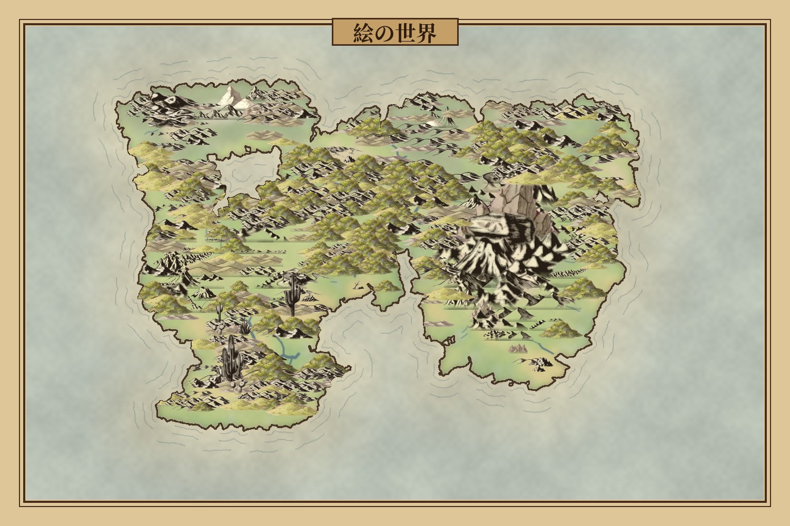
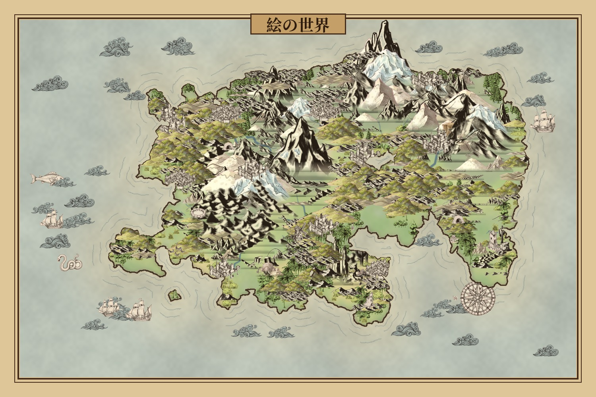

全く絵と割り切って、絵の部品だけで描く(段階17 / 11-20)
概要: データから作る地面の質感は使わず、羊皮紙・海・薄い水彩の色・海岸線・川と、絵の部品(山・丘・砂丘・サボテンなど)だけで組み立てました。山の部品は色を変えず、絵のまま置いています。2つの世界を約3秒で描けます。
ユーザー指示
「次 全く絵と割り切ってファンタジーらしく絵部品のみを使ってうまく描いてみる」
結果(目で見た評価です)
世界A(記事再現・種3)

世界B(記事再現・種7)

- 良い点: 紙と水彩と墨線の統一感が出て、「地図の絵」らしくなった。海の波線と海岸の墨線が効いている。
- 悪い点: 大きな山脈で白黒の強い部品が密集して黒く重い。サボテンが大きい。
- 限界: 木・森・草・町・城・船の部品が手元になく、森や草原は水彩の色だけ。丘の部品も一部(弧の形など)は不自然で除外した。
第2段: 新しい部品(木・草・町・海の飾り・遺跡)を足した(11-20 04:10)
ユーザーがGeminiで作った5枚のシート(木・森/草・湿地/町・城/海の飾り/橋・遺跡)を部品に切り出し(109個)、群系に合わせて置きました。森は針葉樹・広葉樹・ヤシを群系で使い分け、町と城は首都・大きな町の位置、海には波・帆船・怪物・渦・羅針盤を置いています。約3秒で描けます(目で見た評価)。


- 良い点: 森・町・海の飾りが入り、ぐっと「ファンタジー地図」らしくなった。
- 悪い点: 大山脈の黒い部品は変わらず重い。遺跡や塔が山地にやや多い。町の絵は部品が小さく線が細い。
- 限界: 部品は絵のまま(色は群系に合わせて木と草にだけ緑の色味)。道・橋は未使用(川との位置合わせが未実装)。
第3段: 山の絵を色付きに直した(11-20 04:15)
ユーザーの見立て: 山の元の絵は、陰を描いて汎用性を持たせたために黒くなり過ぎている(色で描かれていない)。そこで山・丘・砂丘・崖の139個を1枚のシートにして、Geminiで色付きに描き直してもらい、返ってきた絵を部品に切り出して差し替えました(約3秒で描けます。目で見た評価)。


- 良い点: 黒く重い山がなくなり、水彩の岩山・雪山・砂の山になって全体が明るく、地図の絵として自然。
- 2回目(04:15): 4枚に分けて描き直してもらい(1個あたり約150画素)、赤いにじみも抑えて、縁がきれいになった。
- 3回目(04:35): 「ファイルにして、透明PNGのzipで保存」と頼むと、背景が本当に透明な原寸(2100×1100)の絵が出た。赤い背景を消す処理が不要になり、部品1個の幅が約240画素(前の約1.6倍)になった。
- 悪い点: 山の足元を地面になじませるぼかしがあるため、大きな山の下側はまだやわらかく見える。道・橋は未使用。
- 次の改良案: 大きく使う山だけ、高解像度で個別に描き直してもらう。
道具: tools/illus.py(山は mtn16 の native 指定)。